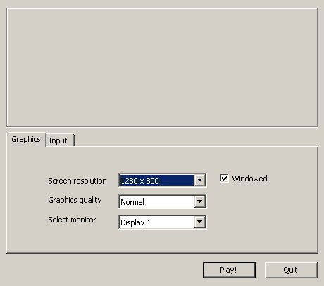
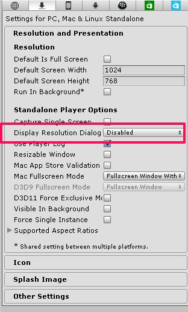

自作のコンフィグ画面に必要なもの
起動前のダイアログ
WindowsやMac向けにビルドすると、ゲーム起動前に以下のようなウィンドウサイズや画質、入力をコンフィグするダイアログが表示される。

これはこれで機能は満たしているものの、ゲーム起動前にこれが毎回起動するのも鬱陶しい。できればゲーム内で設定させたい。
そこで、ゲーム内にこの機能を実装するのに必要なメソッドなどを調べた。
デフォルト値の設定
起動前のダイアログはPlayer Settings の Display Resolution Dialog を Disabled にすれば起動時に表示されなくなる。
フルスクリーンや解像度のデフォルト値についても同様にここで設定できる。

しかし、フルスクリーンや解像度を変えてビルドして試していたとき、設定が反映されない現象にあった。どうやら前回の起動時の解像度やフルスクリーン設定は記憶されていて、それを適用するようだ。
どこに保存されているかというと、レジストリである(Windows)。
Display Resolution Dialog overwrites screen settings?にあるように、
レジストリの
HKEY_CURRENT_USER -> Software -> “Company Name” -> “Product Name”
に記憶されている（Company Name と Product Name はPlayerSettings で設定している値が入る）。
デフォルト設定を試したいときは、このレジストリの値を削除すれば良い。
スクリプトからフルスクリーンにする
Unity Manual - FullScreen
Screen.fullScreen に true を入れればフルスクリーンになるし、falseならウィンドウ。
解像度を変える
Unity Manual - SetResolution
Screen.SetResolution (640, 480, false) などのようにする。第３引数でフルスクリーンかウィンドウかを指定できる
以上２つをキーボードで試しに動かしてみた。うん。ちゃんと動く。
void Update () {
if (Input.GetKeyDown(KeyCode.F))Screen.fullScreen = !Screen.fullScreen;
if(Input.GetKeyDown(KeyCode.A))Screen.SetResolution (640, 480, false);
if(Input.GetKeyDown(KeyCode.S))Screen.SetResolution (1027, 768, false);
}
画質を変える
Unity - Scripting API: QualitySettings.SetQualityLevel
QualitySettings.SetQualityLevelを使えば良い。画質はindexで決まる。
- 0 : Fastest
- 1 : Fast
- 2 : Simple
- 3 : Good
- 4 : Beautiful
- 5 : Fantastic
キーコンフィグ
これが問題。実行中に変更することができない。
下記で示されてるように自作のInput Manager を作るか、アセットストアでそういったアセットを探すしかない。
Possible to remap input manager buttons/axes at runtime?
unity key remap runtime
確認バージョン
Unity 4.6